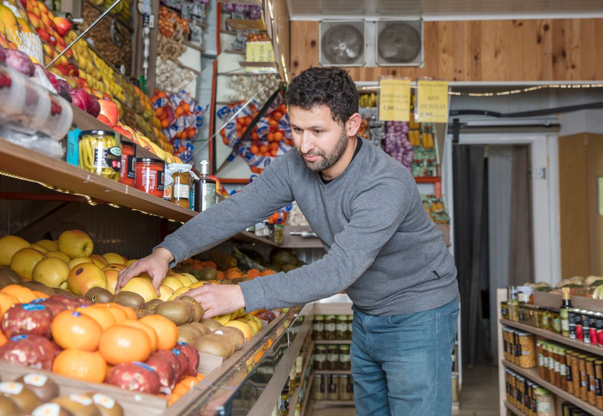

NIB atau Nomor Induk Berusaha bisa kamu buat sendiri secara online dan gratis lewat oss.go.id, tanpa calo dan tanpa datang ke kantor. Cukup daftar hak akses, isi data usaha dan kode KBLI, lalu terbitkan NIB-nya.
NIB adalah nomor identitas resmi untuk usaha yang diterbitkan pemerintah lewat sistem Online Single Submission (OSS) di oss.go.id. NIB berbentuk 13 digit angka. NIB sering diminta saat mendaftar QRIS, membuka rekening usaha, mengajukan pembiayaan, atau bekerja sama dengan perusahaan besar. Per November 2026, pembuatan NIB lewat OSS tidak dipungut biaya. Biaya hanya muncul bila kamu memakai jasa pihak ketiga, jadi abaikan tawaran calo yang memasang tarif. Prosesnya dua tahap: pertama daftar hak akses OSS dengan NIK dan email, kedua ajukan perizinan berusaha dengan mengisi data usaha, lokasi, dan kode KBLI yang sesuai kegiatanmu. Untuk usaha mikro berisiko rendah, OSS meminta pernyataan mandiri, bukan dokumen izin tambahan, lalu NIB bisa diterbitkan dan diunduh. Simpan file NIB di HP dan cetak satu salinan untuk tempat usaha.
Apa itu NIB dan kenapa usaha kecil butuh NIB?
NIB adalah identitas resmi usaha yang diterbitkan pemerintah lewat sistem OSS. Dasar hukumnya Peraturan Pemerintah Nomor 28 Tahun 2025 tentang Penyelenggaraan Perizinan Berusaha Berbasis Risiko, yang berlaku sejak 5 Juni 2025 dan menggantikan PP 5 Tahun 2021. Menurut aturan itu, NIB wajib dimiliki setiap pelaku usaha dan menjadi bukti pendaftaran untuk menjalankan kegiatan usaha.
Buat usaha kecil, NIB sering jadi syarat saat mendaftar QRIS, membuka rekening usaha, mengajukan pembiayaan ke bank, atau bekerja sama dengan perusahaan yang meminta legalitas. Tanpa NIB, urusan-urusan itu biasanya mentok di meja verifikasi.
Tapi NIB bukan izin yang otomatis mencakup semua kegiatan usaha. Kalau usahamu masuk risiko menengah atau tinggi, OSS akan meminta kamu melanjutkan ke sertifikat standar atau izin setelah NIB terbit.
Siapkan dulu: data apa saja yang diminta OSS
Sebelum membuka oss.go.id, siapkan: NIK sesuai e-KTP yang terdaftar di Dukcapil, email aktif, dan nomor HP aktif. Untuk usaha perorangan, tambah NPWP pribadi bila sudah punya, alamat lengkap lokasi usaha, dan foto tampak depan tempat usaha. Isi juga perkiraan modal dan jumlah tenaga kerja dengan jujur, karena OSS memakai angka itu untuk menentukan skala dan tingkat risiko usahamu.
Belum punya BPJS Kesehatan atau BPJS Ketenagakerjaan tidak masalah, proses tetap bisa dilanjutkan. Untuk badan usaha seperti PT atau CV, siapkan akta pendirian yang sudah disahkan atau tercatat di Kementerian Hukum, plus NIK penanggung jawabnya.
Bagaimana cara membuat NIB online di OSS?
Caranya enam langkah, dan semuanya bisa dikerjakan dari HP.
- Buka oss.go.id, lalu klik Registrasi atau Daftar di halaman utama. Pilih skala usaha UMK atau Non-UMK, lalu jenis pelaku usaha Perseorangan atau Badan Usaha.
- Masukkan NIK, email aktif, dan nomor HP, lalu verifikasi lewat kode yang dikirim OSS. Buat kata sandi, kemudian lengkapi profil sesuai e-KTP.
- Masuk ke akun OSS, lalu buka menu Perizinan Berusaha, Kelola Usaha, dan Permohonan Baru.
- Isi data usaha dan tambah bidang usaha dengan memilih kode KBLI lima digit yang sesuai kegiatanmu. Gunakan fitur pencarian kata kunci di OSS bila ragu dengan kodenya.
- Klik Validasi Risiko. OSS menentukan tingkat risiko usahamu. Untuk usaha mikro berisiko rendah, sistem menampilkan draf pernyataan mandiri. Baca dulu, lalu centang.
- Periksa draf NIB, klik Terbitkan Perizinan Berusaha, lalu unduh dan cetak NIB 13 digitmu.
Pilih jalur yang benar sejak awal, jangan asal klik
Pilihan pertama di OSS menentukan data yang diminta setelahnya. Jualan sendiri tanpa PT atau CV berarti jalur UMK Perseorangan. Sudah punya PT, CV, koperasi, atau yayasan berarti jalur Badan Usaha. Batas modal UMK adalah Rp 5 miliar di luar tanah dan bangunan, jadi usaha kecil pada umumnya masuk UMK.
Satu hal yang sering bikin orang mengulang dari nol: akun perorangan tidak otomatis bisa diubah menjadi badan usaha. Halaman bantuan OSS menegaskan hal ini, jadi pastikan pilihanmu benar sebelum mendaftar.
Perhatikan juga kode KBLI. Sejak 18 Desember 2025, klasifikasi yang berlaku adalah KBLI 2025 yang menggantikan KBLI 2020, dengan masa penyesuaian enam bulan. OSS menyediakan halaman konversi KBLI dengan lima jenis perubahan: tetap, berubah, dipecah, digabung, atau disusun ulang. Baca deskripsi dan cakupan tiap kode, lalu cocokkan dengan kegiatan yang benar-benar kamu jalankan.
Kalau gagal di tengah jalan, cek tiga hal ini
Alamat dianggap tidak valid: samakan alamat dengan e-KTP atau dokumen badan usaha, isi tiap kolom wilayah dari pilihan yang disediakan, lalu coba ulang. Kalau tetap gagal, hubungi layanan bantuan OSS.
Kode verifikasi tidak masuk: periksa lagi nomor HP atau email yang kamu isi. OSS menyediakan tombol Ubah Nomor Ponsel atau Ubah Email untuk mengirim ulang kode.
Belum punya BPJS: lanjut saja. Panduan resmi OSS menyebut proses bisa diteruskan tanpa BPJS, jadi jangan berhenti di kolom itu.
Sesudah NIB terbit, apa lagi yang perlu diurus?
NIB yang sudah terbit bisa langsung dipakai. Daftar QRIS supaya pembeli bisa bayar non-tunai, lalu rapikan urusan pajak lewat Coretax DJP. Kalau kegiatan usahamu berisiko menengah atau tinggi, lanjutkan ke sertifikat standar atau izin yang diminta OSS, karena NIB saja belum cukup untuk kegiatan itu.

NIB itu gratis, prosesnya online, dan tidak perlu calo. Siapkan datanya, kerjakan langkahnya, dan usahamu punya identitas resmi. Kalau mentok, kembali ke panduan resmi OSS dan jangan bayar jasa untuk sesuatu yang gratis.
Baca juga: Cara Bikin QRIS buat Usaha Sendiri, Cara Daftar NPWP Online 2026 Lewat Coretax DJP, atau lihat daftar lengkap artikel Other dan artikel riset di blog.
Sumber dan Info Resmi
Fakta dan langkah di artikel ini merujuk ke sumber berikut:
- Nova Media Lab: langkah lengkap Registrasi sampai Terbitkan; jalur UMK Perseorangan vs Badan Usaha; batas modal UMK Rp 5 miliar di luar tanah dan bangunan; akun perorangan tidak otomatis bisa diubah jadi badan usaha; KBLI 2025 dan lima jenis konversi; troubleshooting alamat, kode verifikasi, dan BPJS; pembuatan NIB gratis.
- Badan Perizinan: PP 28 Tahun 2025 berlaku sejak 5 Juni 2025 dan menggantikan PP 5 Tahun 2021; NIB wajib dimiliki setiap pelaku usaha; KBLI 2025 berlaku sejak 18 Desember 2025 dengan masa penyesuaian enam bulan; pernyataan mandiri untuk risiko rendah; pembuatan NIB gratis.
- BSI News: NIB 13 digit; lima tahap pembuatan; pembuatan gratis.
- Lilach Bullock: langkah ringkas dari panduan resmi OSS; data yang disiapkan termasuk foto tampak depan tempat usaha; hak akses dikirim ke email; NIB bisa dilihat, diunduh, dan dicetak.
- Barantum: langkah OSS; NIB gratis; peringatan bahwa tampilan menu OSS bisa berubah.